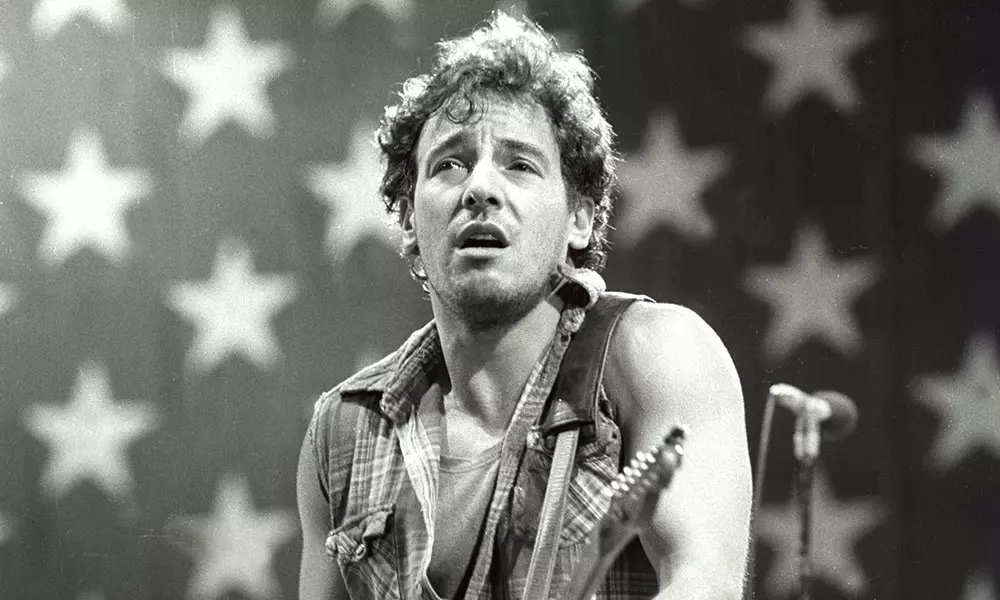

CSU East Bay · Music Department
MUS 302 · What to Listen for in Music
Module 5: European American Immigrant and Working-Class Traditions · Listening Guide · Track 5 of 5
Track 5 Bruce Springsteen, "The River" (1980)

Context
Freehold, three immigrant families becoming white together
was the American-born son of three immigrant lines who had each arrived in the United States at different moments, under different conditions, and on different sides of the long American process by which European-immigrant communities gradually consolidated into a single "white" category. Springsteen's paternal surname is Dutch and runs back through colonial New Jersey to a family that arrived in the seventeenth-century colony of New Netherland; the rest of his father's ancestry is mostly Irish. His mother, Adele Zerilli, was raised in the Italian American Bay Ridge neighborhood of Brooklyn before moving to Freehold to marry; his maternal grandfather was born on the Sorrentine peninsula south of Naples and arrived through Ellis Island as a child in 1900. Freehold Borough itself, the small Monmouth County, New Jersey town the family settled in, was through Springsteen's childhood a working-class mill town of roughly ten thousand residents, economically anchored on the A. & M. Karagheusian rug mill, which employed seventeen hundred workers at its 1930s peak (more than one in six people in the town) and which had drawn its workforce from successive waves of Italian, Irish, Polish, and Eastern European immigrant labor across the early twentieth century. The mill closed in 1964 when Springsteen was fifteen, a closure he would later write about directly in his 1984 song "My Hometown."
The three lines (Dutch, Irish, Italian) were visible in the everyday social texture of the household. The Dutch surname read as German to everyone in town and Springsteen has talked across his life about being teased over it in elementary school. The Irish Catholicism came up out of the parish and the parochial school he attended through eighth grade; the Italian Catholicism came up out of his maternal grandparents' home a few blocks away, where he spent a substantial part of his early childhood. The economic ground under the family was the and the postwar consolidation of these three lines into a single "white working-class" identity. Bruce's father, Douglas Springsteen, was a US Army truck driver at the Battle of the Bulge in the final winter of the Second World War. On his return he qualified, like millions of other recently-arrived European-immigrant veterans, for the GI Bill's postwar housing and education benefits, for the Federal Housing Administration mortgage system whose policies funneled federal mortgage subsidies into white-only suburban developments while explicitly denying them to Black neighborhoods, and for the unionized industrial economy that, through the 1950s and 1960s, paid working-class wages most working-class American families had not seen before. Douglas Springsteen himself cycled through bus driving, rug-mill work, prison-guard shifts, and factory-line work with stretches of unemployment in between; Adele Zerilli, working as a legal secretary in Freehold, was the family's main and steady breadwinner. The household was not well off. Springsteen has described the family in his 2016 autobiography Born to Run as having grown up "pretty near poor"; the family lived for stretches of his childhood with his paternal grandparents on Randolph Street in a small house heated by a single kerosene stove, and Douglas Springsteen's intermittent unemployment and heavy drinking added a layer of household instability to the structural economic picture across the 1950s and 1960s. The white working-class identity Springsteen would later write inside of was, in the specific local form he inherited it, less than two generations old at the time he started writing songs, and at the level of the household it was a thin and uncertain economic ground rather than a comfortable one.
The music that surrounded him as a teenager came out of the same three-lines convergence. Springsteen has consistently named two foundational sources for his own vocal and arrangement instincts. The first is the Italian American tradition, above all, which came out of the radio in the kitchen continuously through Springsteen's childhood (Adele Zerilli was the family's main music selector, and her Top 40 radio ran from the moment she came home from work each evening). The second is the racially mixed urban and that the New York and Philadelphia AM stations broadcast across the Jersey shore through the late 1950s and early 1960s, including Frankie Lymon and the Teenagers' "Why Do Fools Fall in Love" (the anchor track for Module 5 Track 1, released when Springsteen was seven) and the Drifters' Atlantic singles including "Up on the Roof" (the anchor for Track 3, released when Springsteen was thirteen). The two threads converge in Springsteen's mature vocal voice: a controlled, conversational delivery that owes a great deal to Sinatra's behind-the-microphone phrasing, layered with the rasp and the gospel-derived melismatic emphasis that came up out of the doo-wop and soul singers Springsteen heard on the radio. The framing reading's argument that the urban Catholic working-class thread anchors two listening guides (Lymon at one end, Springsteen at the other, with the same neighborhoods producing both) becomes literal at the level of the voice.
Ginny and Mickey, the song's source
The song is a precise account of the early married life of Springsteen's younger sister Virginia (Ginny) Springsteen and her husband Michael (Mickey) Shave, drawn directly from conversations between Springsteen and his brother-in-law in the late 1970s. Ginny, eighteen months younger than Bruce, became pregnant in high school; she and Mickey were married in 1969 when Ginny was seventeen, in a courthouse ceremony in Freehold. Mickey took up construction work in central New Jersey to support the new family, the same kind of work his father and Ginny's father had done before him. The 1979 conversations Springsteen had with Mickey covered what Ginny later described as the structural facts of their first decade together: the pregnancy that closed off other futures, the early marriage that came as a consequence, the construction work that paid the bills for a while and then stopped paying them when the contracted residential construction across the Northeast, and the long question of what the relationship would carry through that period and out the other side. Ginny later told biographer Peter Ames Carlin that the song is an accurate description of her early life. She and Mickey remain married more than fifty years later.
The biographical specifics are worth holding because the song is unusual inside Springsteen's catalog for the directness of its source. Most of the characters on Darkness on the Edge of Town (1978) and The River (1980) are composite figures, drawn from Springsteen's observation of working-class New Jersey life and from his reading (Steinbeck, Flannery O'Connor, Walker Evans's photographs for the Farm Security Administration) rather than from any one identifiable person. The narrator of "The River," by contrast, is essentially Mickey, with names and a small number of details changed: Ginny became "Mary" in the song; the construction firm became the fictional "Johnstown Company," which gestures at the western Pennsylvania steel-and-coal town of rather than naming any actual New Jersey employer; the brother whose car appears in the third verse ("I remember us riding in my brother's car / Her body tan and wet down at the reservoir") is Bruce himself, the narrator's wife's older brother. The reframing matters. The Sinatra and Bennett crooner tradition the framing reading covered worked the standards repertoire: songs written by other people and interpreted by the singer with the singer's own emotional history under the words. The Brill Building songwriters Track 3 covered wrote for other people's voices and other people's bodies. Springsteen's habit, here as elsewhere, is closer to the country songwriting tradition anchored on Module 1's Track 4: write the song yourself, draw the material from your own family and neighborhood, sing it in your own voice. The catch on this particular song is that the narrator is not Springsteen and the events are not his. The first-person voice is borrowed, deliberately, from his brother-in-law.
August 1979 at the Power Station, October 1980 to the country
"The River" was recorded with the at the in New York City on August 26 and 29, 1979, during the first long phase of the eighteen-month sessions. Springsteen, his manager Jon Landau, and the guitarist Steven Van Zandt co-produced; Bob Clearmountain engineered the August sessions. The song was first performed live three weeks later, on September 21, 1979, at the second of the five anti-nuclear benefit concerts at Madison Square Garden, with the E Street Band; that performance was filmed for the 1980 documentary No Nukes and was many listeners' first encounter with the song more than a year before the album it was eventually released on came out.
The album sessions ran from March 1979 through May 1980 at the Power Station, with mixing through July 1980 at Chuck Plotkin's Clover Recorders in Los Angeles. Over fifty songs were recorded across the eighteen months; twenty made the final double-LP sequence. The first single from the album, "Hungry Heart," was released in October 1980 and became Springsteen's first US top-ten single (number five on the Billboard Hot 100). The album itself, released on October 17, 1980, was Springsteen's first number-one record on the Billboard 200; "The River" was released as a single in Europe in April 1981 (number five on the Norwegian singles chart, top ten in Sweden and Denmark) but not in the United States, where it received heavy album-oriented-rock radio airplay across the early 1980s and became one of Springsteen's most recognized songs without ever charting on a US singles chart.
The economic context of the release matters because the song is, among other things, a recession song. The first phase of the early-1980s recession ran from January through July 1980; manufacturing and construction employment in the Northeast and Midwest contracted sharply, and rates of inflation ran above ten percent across the same year. Springsteen and the E Street Band were mixing and sequencing the album through the worst of that contraction. The album was released on October 17, 1980, three weeks before the November 4 election that brought Ronald Reagan to the White House on a campaign of confidence about the country's economic direction. Springsteen has consistently said in interviews across the rest of his life that the recording is rooted in conversations he had with his brother-in-law about losing construction work in the late 1970s, and that the broader popular reception of the song through the 1980s as a document of the moment was a generalization out from the specific family case it actually narrated.
Where this track sits in Module 5
This track closes the module. The framing reading laid out four threads through the European American popular tradition: the Ulster Scots ballad inheritance Joan Baez's "Mary Hamilton" carries on Track 2, the Eastern European Jewish songwriting tradition the Drifters' "Up on the Roof" carries on Track 3, the synthesizer-pioneer thread Wendy Carlos's Switched-On Bach excerpt carries on Track 4, and the Italian, Irish, and Polish urban Catholic working-class thread that anchors two of the five tracks: Frankie Lymon and the Teenagers' 1956 doo-wop opens the thread and the module; Springsteen's 1980 closes both. Two listening guides on a single thread, with a generation between them, is the framing reading's structural argument about that thread's long span and internal continuity. The same Northeastern Catholic working-class neighborhoods produced both. Lymon was a Black thirteen-year-old in Washington Heights singing into a Jewish-immigrant-owned independent label's microphone in late 1955; Springsteen was a thirty-year-old Irish-Italian-American songwriter from Freehold singing into ' major-label microphone in late 1979. The continuity is the audience and the radio and the streets the records traveled through. Springsteen would have heard "Why Do Fools Fall in Love" on AM radio in Freehold in 1956 the way every other seven-year-old on the eastern seaboard heard it.
The song also carries a direct lyrical inheritance from Hank Williams on Module 1's Track 4, the country anchor for the methodology reading, and the borrowing is exact enough that it is worth flagging at the front of the listening. Williams's 1950 single "Long Gone Lonesome Blues" opens: "I went down to the river to watch the fish swim by / But I got to the river so lonesome I wanted to die, oh Lord / And then I jumped in the river but the doggone river was dry." Springsteen's chorus closes: "That sends me down to the river though I know the river is dry / That sends me down to the river tonight." The image of going down to a river that is no longer there, and that the narrator goes to anyway, is Williams's image, and Springsteen has cited the line directly in interviews as a source. The borrowing reaches across two of the module's threads at once: the Ulster Scots ballad lineage Williams sits inside (carried in this module by Baez's "Mary Hamilton") and the urban Catholic working-class lineage Springsteen sits inside, with the country songwriting tradition Williams anchors functioning as the connective tissue between them. The Module 5 framing reading argued that the four threads are distinct in their cultural roots while running in continuous dialogue with each other and with African American music. The borrowed line is one of the places that dialogue becomes audible inside a single song.
Things to listen for
The song is in , in , at a of about 117 (a slow walking pulse, noticeably slower than the Lymon recording on Track 1 and the Drifters recording on Track 3, and almost the same tempo as Sam Cooke's "A Change Is Gonna Come" in Module 1). The runtime is 4 minutes 59 seconds, the longest anchor track in Module 5 by a substantial margin and almost twice the runtime of the Lymon and Drifters tracks the song is in conversation with. Personnel: Bruce Springsteen (lead vocal, acoustic guitar, ), with the E Street Band: Roy Bittan (piano), Danny Federici (organ), Steven Van Zandt (guitar), Garry Tallent (bass), Max Weinberg (drums), and Clarence Clemons (background vocals; this is one of the few Springsteen recordings where the band's saxophone voice is held entirely out of the foreground arrangement). Form: a four-bar harmonica-and-guitar introduction; four verses (each sixteen bars); three choruses (each ten bars), placed after verses one, two, and four (the third verse runs directly into the fourth without a chorus between them); an instrumental harmonica solo on the verse chord pattern between verses three and four; a long extended outro on the chorus pattern with wordless vocal harmonies and the harmonica returning over the top. The harmonic vocabulary across the verses is Em-G-D-C with passing variants (the C reaches G through a G-with-F-sharp-bass passing chord; the Am replaces C as the resolution of the four-bar phrase under "we'd drive out of this valley"); the chorus opens on Em-C-D-G and closes Em-C-D-C, returning to the verse. Two things to bear in mind across these prompts. First, the song's harmonic center is the I (G major), and the chorus resolves there, but every verse opens on the vi (E minor) and the verse spends most of its time in minor territory before the chorus opens the door to G. The minor-pivoting verse against the major-resolving chorus is the song's harmonic argument, and it sits inside the broader G-major key in a way that is structurally different from the bright I-vi-IV-V cycles of Track 1 and Track 3. Second, every instrument in the arrangement is doing less than it can; the song is a restraint exercise from end to end.
First, the of the harmonica and what the opening phrase is doing. The recording opens with eighteen seconds of harmonica and acoustic guitar before any other instrument enters, and the harmonica carries the song's emotional center across those eighteen seconds before the lyric does any work at all. Springsteen plays in cross-harp position: the harmonica is a G harp (the song's home key), but Springsteen is playing it as a D instrument, working in the key a fifth above the harmonica's home key. Cross-harp is the standard country-blues and country-music position and it makes the bent and "blue" pitches of the blues-harmonica vocabulary available; the dry, conversational tone of the playing (single-note phrases, almost no , a small amount of slurred bending into pitches) is closer to Hank Williams's harmonica playing on his late-1940s recordings than to the harmonica vocabulary of Little Walter and Sonny Boy Williamson, and the choice positions the recording inside the country-and-folk songwriting tradition more than inside the urban-blues tradition. Listen to the way Springsteen lets the third and fourth notes of the opening phrase sit unresolved against the acoustic guitar, in the same way an Appalachian tune lets a question-and-answer phrase hang on the question end. The opening eighteen seconds are doing the work of an unsung verse: the harmonica says everything the rest of the song will go on to say, and the lyric that comes in at the nineteenth second is, in a sense, the explanation. Compare to Hank Williams on Module 1's Track 4: the same conversational country-harmonica idiom, the same use of the instrument as the recording's emotional thesis statement before the voice arrives, the same sense that the singer's voice is going to follow on what the instrument has already established. The choice to open with harmonica rather than with the full band is a direct stylistic borrowing from the country tradition. The same harmonica returns over the long instrumental outro and is the last sound on the recording, after the voice has stopped singing.
Second, the of the E Street Band arrangement and what is conspicuously not in it. On a typical 1979 or 1980 Springsteen recording (the album's own "Hungry Heart" two tracks earlier, or "Out in the Street," or "Cadillac Ranch," or any of the up-tempo party songs that make up the other half of the double LP), the texture is built around Clarence Clemons's saxophone in the foreground, with piano and organ filling the keyboard space and two electric guitars and the underneath. The texture is dense, layered, and forward-moving. "The River" deliberately strips that vocabulary back. Clemons is on the recording but is held out of the saxophone-foreground role entirely; his contribution is background vocal harmony at the chorus and the outro. The two keyboard voices (Roy Bittan's piano on the right side of the mix, Danny Federici's organ on the left) play sustained pads underneath the vocal rather than the rolling rhythmic figures they typically run. Steven Van Zandt's is barely audible across the verses and emerges only at the end of each chorus phrase to mark the resolution to G. Max Weinberg's drumming is also minimal: closed hi-hat on quarter notes, a soft kick and snare on the first and third beats of the bar, no fills, no cymbal work above the closed hi-hat. The arrangement is sparser than anything else on the album by a substantial margin, and the choice was a clear one in the production: the song is about a kind of life that the album's louder songs are also about, but the song's argument cannot be made at the volume the louder songs are made at. The texture is what makes the lyric audible. Compare to Track 3 (the Drifters): "Up on the Roof" runs the opposite production logic, building a dense orchestral texture above an R&B rhythm section to lift the song's romantic-escape lyric into a kind of cinema. "The River" pulls the texture down to almost nothing and lets the words sit on their own.
Third, the , and how the song's harmonic shape mirrors its lyric. The verses open on Em (the vi chord in G major) and spend the first three bars of each four-bar phrase in minor territory before the C resolves toward the G chorus; the verse never closes on the home chord. The pattern is the harmonic opposite of Track 1's I-vi-IV-V cycle, which opens on the major I (the bright home chord) and runs the minor vi as a passing color before returning home. "The River" inverts that. The minor is the home of the verses; the major is where the chorus pulls toward; and the resolution to G is short, sitting on the chord only at the end of each chorus phrase ("And into the river we'd dive"). The chorus then immediately falls back to Em-C-D-C and into the next verse, which opens on Em again. The harmonic gravity of the song is downward, toward the minor; the chorus opens an aperture toward the major that closes again as soon as the singer stops singing. Map the lyric onto the harmony as you listen. The verses tell what happened (the valley, the meeting, the pregnancy, the union card and the wedding coat, the construction job, the recession, "all them things that seemed so important well mister they vanished right into the air") and run in minor; the choruses describe the river itself ("And into the river we'd dive") and reach for the major. By the last chorus, after the third verse has revealed that the river is dry, the singer is still trying to reach the major, but the chord that arrives ("though I know the river is dry") arrives on a C, not the G, and the resolution to G now feels asked-for rather than delivered. The harmonic question the song is built around (will the chorus reach G or not) is the lyric question the song is also built around (is the marriage between the narrator and Mary going to hold across the recession that is destroying their economic ground or not), and the form lets the listener feel the question continuously across five minutes of music. The closing verse, which has no chorus following it, leaves the listener alone with the minor-pivoting verse pattern under the harmonica solo, with no resolution coming.
Fourth, the of the recording as a closing move on the entire module. The Module 5 framing reading argued that the four European-immigrant threads it covered share two structural features: a long American process by which their carriers came to be understood as white, and a sustained and often unequal dialogue with African American music that runs through every thread. "The River" makes both arguments audible inside a single recording. The whiteness-as-route argument is in the song's narrator: an Irish-Italian-Catholic working-class New Jerseyan whose specific cultural position depends on the postwar consolidation the framing reading laid out, narrated by a songwriter from a family whose three immigrant lines arrived under different conditions and at different moments. The Sinatra-formed vocal phrasing and the doo-wop-derived harmonic sensibility are the previous-generation versions of the same threads, audible inside the recording itself. The dialogue-with-Black-music argument is in two specific places. The first is the harmonica vocabulary: cross-harp position itself runs back through the country tradition to the early blues, and the bent and slurred pitches Springsteen uses are vocabulary the country-blues harmonica tradition shares with the rural Black blues harmonica tradition of Sonny Boy Williamson, Sonny Terry, and DeFord Bailey, the long Black tradition this module does not anchor but that Module 2 covers in detail. The second is the borrowed Hank Williams river image: Williams himself learned much of his songwriting and his vocal phrasing from the African American street musician Rufus "Tee Tot" Payne in 1930s Alabama, as Module 1's listening guide for Williams covered substantively, so the dry-river lyric Springsteen lifts from "Long Gone Lonesome Blues" carries a hidden African American genealogy that runs back two generations before Springsteen got to it. The gesture audible across the five minutes of the recording is the gesture of a song that knows it is the closer of a long arc and that, like the Drifters recording on Track 3, is saying something about the structural conditions of the music alongside saying what it appears to be saying about a marriage and a river. The lyric is about Mickey and Ginny. The recording is about Module 5.
The song's commercial life carried the same doubleness across the 1980s and after. The album's commercial peak was "Hungry Heart," a deliberately Lymon-and-Drifters-style up-tempo doo-wop revival single that became Springsteen's first US top-ten hit; Springsteen had originally written it for the Ramones (the punk band the Module 5 framing reading discussed in the leaves-out section as the Italian American and Jewish American working-class punk endpoint of the same urban-Catholic thread Lymon opens), and his manager Jon Landau convinced him to keep it for himself. "The River" itself never charted as a US single but became one of the songs most associated with Springsteen across the rest of his career, particularly across the 1984-1985 Born in the U.S.A. tour, where Springsteen frequently preceded the song with extended spoken-word stories about his draft induction (he was called for his Vietnam draft physical and failed it because of a motorcycle-accident concussion, which he attributed in those introductions to a kind of structural luck three of his Freehold high school classmates did not have) and about his long-difficult relationship with his father. The song became, on those tours and after, the place in the set where Springsteen made the historical and political ground of the recording explicit. The 1986 release of the song on the live Live 1975-85 box set carried the 1984-85 spoken-word introduction with it. The recording on this listening guide is the 1980 studio version, which carries the same historical and political ground but lets the lyric and the form do the work the spoken-word intros would later do on the road.
Reflective question
The Module 5 framing reading argued that the European American popular tradition is the cultural-roots module where the category itself is hardest to hold steady, and that this module's four threads remain distinct in their cultural roots while running in continuous dialogue with each other and with African American music. "The River" is the module's closing argument and it makes that case audible inside a single recording. Pick one specific moment in the song (the opening eighteen seconds of harmonica and acoustic guitar before the voice enters, the lift from Em into C under "Mary acts like she don't care" in verse two, the held two-bar G that opens the first chorus, the dropped-out arrangement under the third verse's "I remember us riding in my brother's car," the suspended chord under "haunt me like a curse" at the end of verse three, the wordless harmony "ooh" responses on the long outro, the final harmonica phrase that closes the recording without any further vocal) and make an argument for what that moment is doing musically and what it is doing as a closing gesture on Module 5. Where in the moment do you hear the four cultural-roots threads of the module (Ulster Scots, Eastern European Jewish, Italian-Irish-Polish urban Catholic, synthesizer pioneers) audible inside the song, and where do you hear the dialogue with African American music that runs across all four? Does it change your hearing of the moment to know that the narrator is Springsteen's brother-in-law rather than Springsteen himself, and that the song narrates a marriage that, contrary to its own implied trajectory, has lasted more than fifty years?
Sources for this section
Springsteen, Bruce. Born to Run. Simon & Schuster, 2016. Springsteen's autobiography; the source for the Freehold biographical material (the three-line family heritage, the Randolph Street paternal-grandparents house with the kerosene stove, St. Rose of Lima Catholic School, the kitchen-radio childhood with Sinatra and the Brill Building singles), for the "pretty near poor" framing of the family's economic position and the description of Douglas Springsteen's intermittent unemployment and drinking, for the account of Mickey and Ginny that the song is built on, and for Springsteen's own framing of his vocal and arrangement debts to the Italian American crooner tradition and the doo-wop and R&B he heard on the radio.
Carlin, Peter Ames. Bruce. Touchstone, 2012. The standard scholarly biography of Springsteen written before the autobiography; source for the Ginny Springsteen interview in which she states directly that "The River" is an accurate description of her and Mickey's early life together, for the personnel and chronology of the 1979-1980 sessions, and for the broader account of the family and its economic circumstances across the 1970s.
"The River." Wikipedia, en.wikipedia.org/wiki/The_River_(Bruce_Springsteen_song). General reference article on the song; consulted for confirmation of the Hank Williams "Long Gone Lonesome Blues" lyrical borrowing (which Springsteen has cited directly in interviews), the chart performance details, the September 21, 1979 first live performance at the MUSE No Nukes concert, the album-tour use of the song with the extended spoken-word introductions, and the 1986 live release on Live 1975-85. As with all reference-work citations on this site, a Wikipedia article on a topic that is documented in the underlying scholarly biographies is used as a synthesis source rather than as a primary source.
Brucebase Wiki. "The River Studio Sessions." brucebase.wikidot.com/stats:the-river-studio-sessions. The standard online reference for the recording chronology of the The River album; source for the March 1979 through May 1980 session run, the August 26 and 29, 1979 recording dates for the title track at the Power Station, the Jon Landau and Steven Van Zandt co-production credits, the Bob Clearmountain and Neil Dorfsman engineering credits, and the Chuck Plotkin and Toby Scott Clover Recorders mixing chronology.
"The River (album)." Wikipedia, en.wikipedia.org/wiki/The_River_(Bruce_Springsteen_album). Reference article on the album; consulted for the October 17, 1980 release date, the double-LP twenty-song track listing, the Billboard Hot 100 number-five peak for "Hungry Heart" as Springsteen's first US top-ten single, the Billboard 200 number-one album chart performance, and the eighteen-month session arc.
Williams, Hank, and the Drifting Cowboys. "Long Gone Lonesome Blues." MGM 10645, March 1950. Williams's second number-one record on the Country and Western chart; source for the river-that-is-dry lyrical image Springsteen directly borrows for the chorus of "The River" ("I went down to the river to watch the fish swim by ... And then I jumped in the river but the doggone river was dry"). Williams and his playing are anchored on Module 1's Track 4, "I'm So Lonesome I Could Cry," and the African American songwriting-and-vocal-style debt Williams owed to the Greenville and Georgiana street musician Rufus "Tee Tot" Payne is covered on that page.
Garman, Bryan K. A Race of Singers: Whitman's Working-Class Hero from Guthrie to Springsteen. University of North Carolina Press, 2000. The standard scholarly account of the cultural-political tradition of "the working-class hero" in American popular music from Walt Whitman through Woody Guthrie to Bruce Springsteen; consulted for the situating of Springsteen inside a long American songwriting tradition that the folk revival generation of Module 5 Track 2 also operates inside, and for the political and economic framing of Springsteen's late-1970s and 1980s work.
US Bureau of Labor Statistics. "Employment and Unemployment in 1980." Monthly Labor Review, February 1981. Government statistical report on the 1980 first-phase recession; source for the January-through-July 1980 timing of the contraction, the manufacturing and construction sector employment losses that hit the Northeast particularly hard, and the inflation-above-ten-percent figure for the same year. The structural economic context "The River" was written and recorded inside is documented here in detail.
Roediger, David. The Wages of Whiteness: Race and the Making of the American Working Class. Verso, 1991, revised ed. 1999. With Matthew Frye Jacobson's Whiteness of a Different Color (Harvard, 1998) and Noel Ignatiev's How the Irish Became White (Routledge, 1995), one of the three foundational texts of the whiteness-studies tradition. Consulted for the structural account of the postwar consolidation of European-immigrant working-class identity into a single "white" category through the GI Bill, FHA mortgage system, and unionized industrial-economy infrastructure that Springsteen's Freehold family inherited and that the song's narrator sits inside.
Cowie, Jefferson. Stayin' Alive: The 1970s and the Last Days of the Working Class. New Press, 2010. Cultural and economic history of the American working class in the 1970s, with particular attention to the deindustrialization of the Northeast and Midwest, the political realignment of white working-class voters across the decade, and the role of figures like Springsteen, Merle Haggard, and the Boss-era political imagination in the period. Consulted for the broader historical framing of The River as a recession-era working-class document and for the November 1980 election context the album was released into.
"Bruce Springsteen." Wikipedia, en.wikipedia.org/wiki/Bruce_Springsteen. Reference article; consulted for the biographical facts (September 23, 1949 birth at Monmouth Medical Center in Long Branch, the Adele Zerilli and Douglas Springsteen parents, the three-line Dutch-Irish-Italian family heritage, St. Rose of Lima Catholic School and Freehold Regional High School), the maternal Vico Equense family origin, and the 1969 Castiles-era pre-recording chronology. The genealogical specifics (Garrity, McNicholas, O'Hagan, Farrell, Sullivan paternal family names; Zerilli and Sorrentino maternal family names) are documented in detail at the Irish America genealogical essay and the New Netherland Institute biographical page on Springsteen, both consulted here.